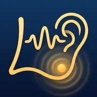

Lắng
Quả địa cầu biết nói: nói tên một nơi bất kỳ để nghe thời tiết, lịch sử khí hậu và thiên tai NASA bằng tiếng đàn bầu; rê tay trên bản đồ địa hình thật, nghe tiếng sáo theo độ cao; khám phá Hệ Mặt Trời và âm thanh thật của NASA. Không cần bấm nút — app luôn lắng nghe. Hãy cho phép dùng micro.
Chạm vào bất kỳ chỗ nào trên màn hình, hoặc nhấn phím bất kỳ. Trình duyệt chỉ cho phát tiếng và dùng micro sau một lần chạm.